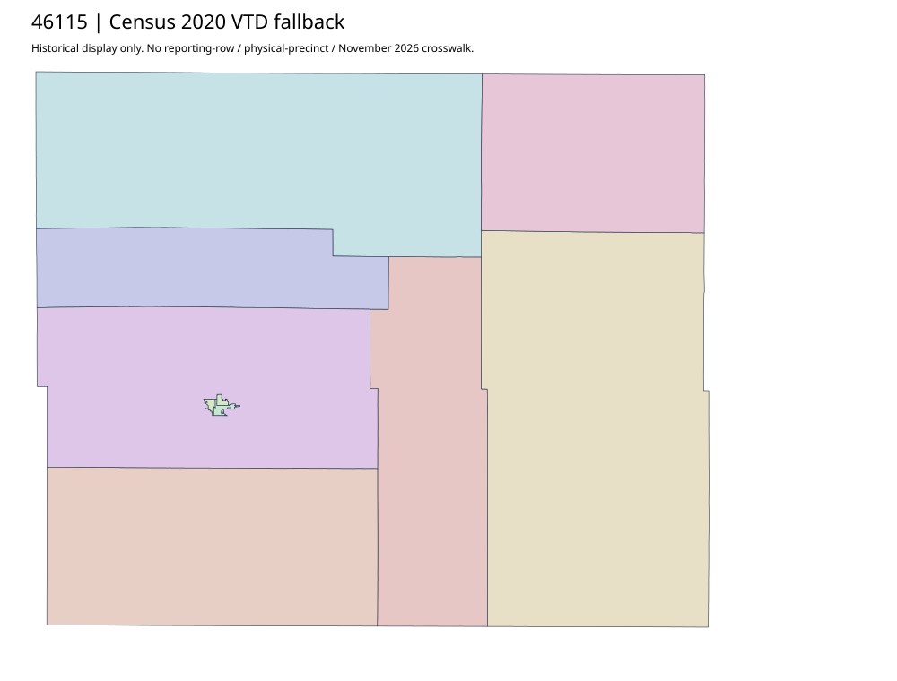

304 ordered indexSpink | 46115
Official Elections parent links acquired complete voting-precinct PDF; actual full-page footer prints February2006. Web descriptions retain precinct group9&10. No source-supported current effectiveness or separate allocation for combined reporting observations; Census2020 remains separate.
3 priority / 9 full historical observations. Parent is a summary ancestor, not additive to leaves. No physical feature matches or current reporting crosswalk approved.
Acquired shared-parent assets
map-46115-019-network | complete1-page PDF; all-page contact sheet; complete page1; complete original gzip. Exact reconstruction: python -B scripts/reconstruct.py --id map-46115-019-network /private/tmp/map.pdf
Census2020 fallback
9 native historical VTD features. Entire785-feature ZIP original retained once, all66 counties. Yankton has one countywide VTD. No current/reporting allocation. complete original gzip

Full binary/attribute/geometry QA
Observed authority/acquisition routes
Complete SOS authority fields including original blank/masked values: parent inventory. No contacts were sent.
Ordered full children
- Precinct-09 | 524 source votes | priority
- Precinct-10 | 504 source votes | priority
- Precinct-07 | 477 source votes | priority
- Precinct-01 | 416 source votes | remainder
- Precinct-04 | 356 source votes | remainder
- Precinct-03 | 353 source votes | remainder
- Precinct-05 | 236 source votes | remainder
- Precinct-08 | 155 source votes | remainder
- Precinct-06 | 118 source votes | remainder